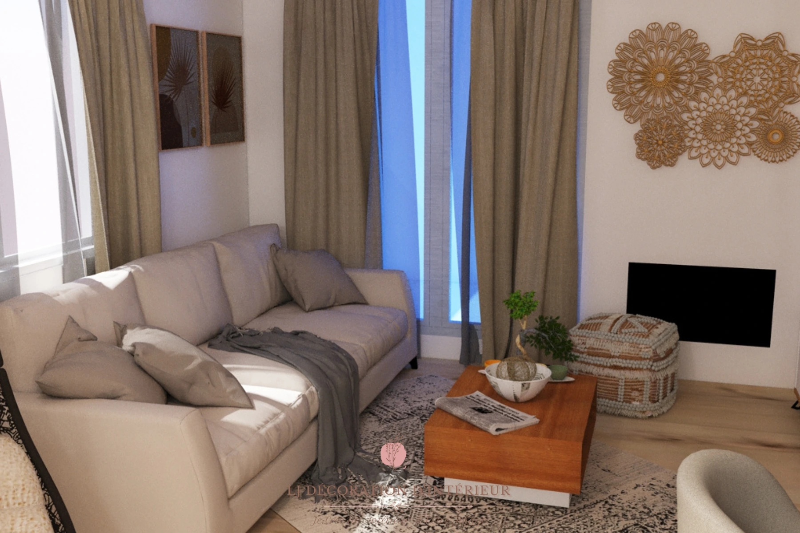

Séjour et coin bureauPièce à vivre · Projet 3D



Un même volume qui doit tenir la détente et le travail. La console basse, le plan de bureau en bois et l'assise suspendue tiennent chacun leur zone sans cloison, et le regard traverse la pièce d'un bout à l'autre.
CuisinesTrois partis pris · Projet 3D
Le bleu nuit sur toute la longueur, le rose adouci par le bois cannelé, ou l'îlot central ouvert sur la pièce à vivre. La cuisine décide de l'ambiance de tout l'étage.
ChambresNuit · Projet 3D
Le rangement passe avant le décor : tête de lit en bois pleine hauteur, verrière d'atelier en loft, mur poudré, ou simple assise suspendue près du lit.
Chambres d'enfantNuit · Projet 3D
Un lit cabane, des lits superposés. Des pièces qui doivent durer plus de deux ans et se ranger en cinq minutes.
Pièces à vivreSéjour · Projet 3D
Des volumes ouverts où la table, le canapé et la circulation se partagent la lumière sans se gêner. La couleur arrive par un seul mur, jamais par tous.
Salles à mangerRepas · Projet 3D
La table donne le rythme de la pièce. Autour, on ne met que ce qui sert : un buffet, un éclairage bas, et de quoi circuler.
Coins bureauTravail à la maison · Projet 3D
Quelques mètres carrés gagnés sur une alcôve ou un angle de séjour, qui doivent rester beaux quand on ne travaille pas.
L'entrée et les circulationsProjet 3D
Quelques mètres carrés qui donnent le ton de tout le reste. La claustra sépare sans fermer, l'assise et le miroir font le service, et rien ne dépasse.